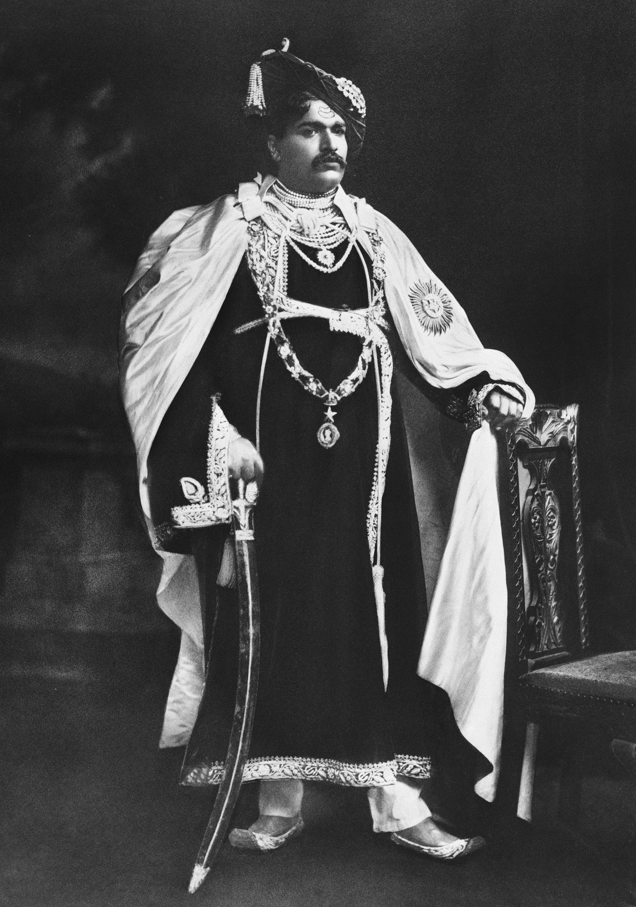

Chhatrapati Shahu Ji Maharaj University Kanpur, a premier landmark of higher education in Uttar Pradesh is named after the great social reformer Chhatrapati Shahu Maharaj also known as Rajarshi Shahu. It is a well-established and respected educational community where students of all backgrounds study and work together in a congenial and encouraging academic atmosphere. The university is geared to provide maximum scholastic benefit to each individual student and nurture them to achieve their full potential and evolve as a responsible global citizen
Shahuji Maharaj was the first Maharaja of the princely state of Kolhapur. Greatly influenced by the contributions of social reformer Jyotiba Phule and the Satya Sodhak Samaj movement, Shahu Maharaj was an ideal leader and able ruler who was associated with many progressive and path breaking activities during his rule.
He was born Yeshwantrao in the Ghatge family in Kagal village of the Kolhapur district as Yeshwantrao Ghatge to Jaisingrao and Radhabai in June 26, 1874. From his coronation in 1894 till his demise in 1922, he worked tirelessly for the cause of the lower caste subjects in his state. Primary education was made free to all regardless of caste and creed. He introduced a number of educational programs to promote education among his subjects. He established hostels separately for different ethnicities and religions and introduced several scholarships for meritorious students. He established Vedic Schools that enabled students from all castes and classes to learn the scriptures and propagate Sanskrit education among all. He also started special schools for the village heads or ‘Patils’ to make them into better administrators. Shahu Maharaj issued orders to open schools and hostels for backward castes, which was a unique initiative to educate those who were traditionally neglected for centuries. He exhorted that “It is necessary to end casteism. It is a crime to support caste. Caste is the biggest obstacle in the progress of our society. Caste-based organizations have vested interests. Certainly such organizations should use their power to end caste system, instead of strengthening them”.
He established schools to educate the women, and introduced a law banning the Devadsi Pratha, the practice of offering girls to God, which essentially led to exploitation of the girls. He legalised widow remarriages in 1917 and made efforts towards stopping child marriages.
He introduced a number of projects that enabled his subjects to self-sustain in their chosen professions. The Shahu Chhatrapati Spinning and Weaving Mill, dedicated market places, establishment of co-operative societies for farmers were introduced by the Chhatrapati to alleviate his subjects from middle men in trading. He made credits available to farmers looking to buy equipment to modernise agricultural practices and even established the King Edward Agricultural Institute to teach the farmers to increase crop yield and related technologies. He initiated the Radhanagari Dam on February 18, 1907 and the project was completed in 1935. The dam stands testament to Chhatrapati Shahu’s vision towards the welfare of his subjects and made Kolhapur self-sufficient in water.
He was a great patron of art and culture and encouraged artists from music and fine arts. He supported writers and researchers in their endeavours. He installed gymnasiums and wrestling pitches and highlighted the importance of health consciousness among the youth.
His seminal contribution in social, political, educational, agricultural and cultural spheres earned him the title of Rajarshi, which was bestowed upon him by the Kurmi warrior community of Kanpur. The great social reformer Chhatrapati Shahuji Maharaj died on May 6, 1922.